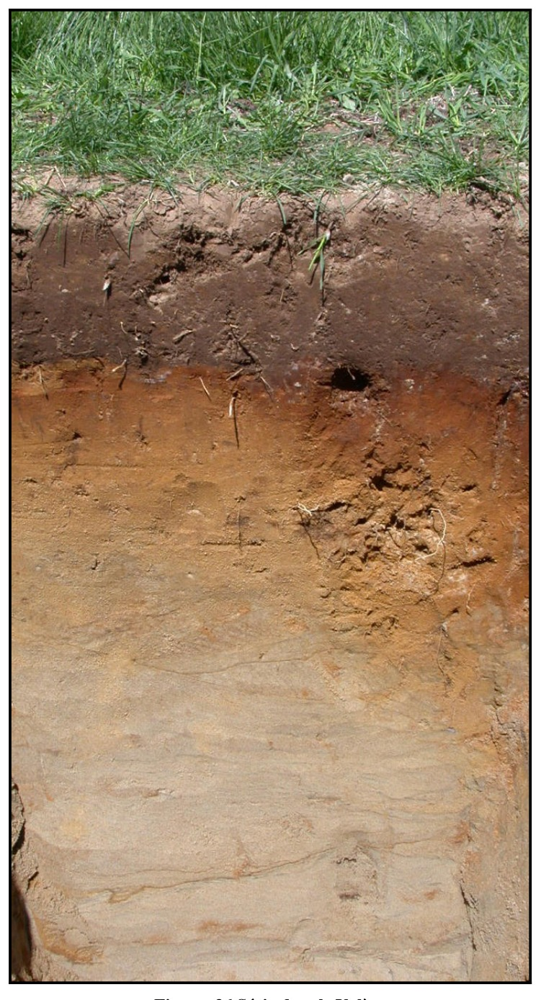

Identification & Caractéristiques Générales
Les sols de la série Valère se sont développés sur des dépôts meubles d'origine fluviatile ou estuarienne, constitués de sables fins loameux de couleur gris à gris olive. Ces formations s'observent en contextes de plaine et de piédmont, principalement sur des topographies planes à légèrement inclinées présentant des pentes variant de 0,5 % à 5 %. Le profil pédologique montre des sols profonds et non pierreux, caractérisés par une texture à granulométrie homogène dominée par la fraction sableuse fine, bien que de légers écarts texturaux puissent être relevés localement selon les secteurs.
La morphologie de ces profils met en évidence une perméabilité modérée à faible et un régime hydrique de drainage imparfait. La couche arable (Ap), d'une épaisseur moyenne de 15 cm, est constituée d'un loam sableux très fin brun foncé, caractérisé par une teneur élevée en matières organiques, une structure granulaire très faiblement développée ou massive, et une réaction fortement acide. Elle surmonte un sous-sol (Bfg) podzolisé et gleyifié, épais d'environ 14 cm, formé de sable fin loameux brun rouge foncé sans structure. Le substratum (Cg), atteint à une profondeur variant de 40 à 60 cm, se compose d'un sable fin gris à gris olive, également gleyifié et fortement acide, traduisant l'influence d'une nappe phréatique temporaire.
Sur le plan agronomique, les sols de la série Valère conviennent à la production de grandes cultures et de cultures fourragères, tout en présentant des contraintes inhérentes à leur régime hydrique et à leur acidité. Les limitations majeures incluent la présence d'une nappe d'eau temporaire en période de fonte nivale ou de fortes précipitations, ainsi qu'une battance potentielle en surface en raison de la faible structuration organique. La mise en valeur agricole de ces sols requiert l'installation d'un réseau de drainage souterrain pour abaisser le niveau de la nappe phréatique et améliorer la portance printanière, ainsi que des apports réguliers d'amendements calciques pour corriger la forte acidité du profil. Un travail cultural modéré est également préconisé afin de préserver le stock organique de l'horizon de surface.
Classification Taxonomique & Environnement Pédologique
| Ordre Pédologique | Podzolique |
|---|---|
| Grand Groupe (SCSS) | Podzol humo-ferrique |
| Sous-Groupe Taxonomique | Podzol humo-ferrique gleyifié |
| Famille Pédologique | Loameuse-grossière, mixte sableux, acide |
| Mode de Dépôt Parental | Fluviatile |
| Classe de Drainage Naturel | Imparfaitement drainé |
| Régime Thermique & Humidité | Frais / Perhumide |
Description Morphologique du Profil Type
Séquences génétiques des horizons pédologiques caractérisant le profil type représentatif de la série Valère :
Profil forestier (sous boisé) — Comté de Mégantic
✓ Source : Comté de Mégantic — Page 25Couleur Munsell : 5YR 2/1, 5YR 5/6
Structure & Consistance : Polyédrique à granulaire
Description morphologique : Horizon organique semi-décomposé noir à brun rouge (5 YR 2/1,5 h), rouge jaune (5 YR 5/6 s); meuble; racines très abondantes, de toutes les grosses, non-orientées, exo-agrégats; limite abrupte, ondulée; épaisseur de 4 à 22 cm; extrêmement acide.
Couleur Munsell : 5YR 7/1, 10YR 7/1
Structure & Consistance : Polyédrique à granulaire
Description morphologique : Sable fin loameux gris clair à gris rose (5 YR 7/1,5 h), gris clair (10 YR 7/1,5 s); particulaire; meuble; racines très abondantes, moyennes, fines, très fines et microscopiques, non-orientées, exo-agrégats; limite abrupte, brisée; épaisseur de 0 à 18 cm; extrêmement acide.
Couleur Munsell : 5YR 5/8 (matrice), 10YR 6/7 (marbrures)
Structure & Consistance : Polyédrique à granulaire
Description morphologique : Sable fin loameux rouge jaune (5 YR 5/8 h), jaune brun (10 YR 6/7 s); marbrures fréquentes, fines, distinctes, brun rouge foncé à rouge (2,5 YR 3/5 h); particulaire; très friable; racines abondantes, fines, très fines et microscopiques, obliques, exo-agrégats; limite nette, ondulée; épaisseur de 8 à 20 cm; très fortement acide.
Couleur Munsell : 5Y 5/5 (matrice), 10YR 6/6 (marbrures)
Structure & Consistance : Polyédrique à granulaire
Description morphologique : Sable fin loameux olive clair (2,5 Y 5/5 h), jaune brun (10 YR 6/6 s); marbrures fréquentes, fines, marquées, jaune rouge (5 YR 6/8 h); particulaire; très friable; racines abondantes, moyennes, fines, très fines et microscopiques, obliques, exo-agrégats; limite nette, ondulée; épaisseur de 27 à 35 cm; fortement acide.
Profil forestier (sous boisé) — Comté de Arthabaska — Variante fait partie
✓ Source : Comté de Arthabaska — Page 21Couleur Munsell : 5YR 2/1, 5YR 5/6
Structure & Consistance : Polyédrique à granulaire
Description morphologique : Matière organique semi-décomposée noire à brun-rouge (5 YR 2/1,5 h), rouge-jaune (5 YR 5/6 s); meuble; racines très abondantes, de toutes les grosses, non orientées, exo-agrégat; limite abrupte, ondulée; épaisseur de 4 à 22 cm; extrêmement acide.
Couleur Munsell : 5YR 7/1, 10YR 7/1
Structure & Consistance : Polyédrique à granulaire
Description morphologique : Sable fin loameux gris clair à gris-rose (5 YR 7/1,5 h), gris clair (10 YR 7/1,5 s); particulaire; meuble; racines très abondantes, moyennes, fines, très fines et microscopiques, non orientées, exo-agrégat; limite abrupte, interrompue; épaisseur de 0 à 18 cm; extrêmement acide.
Profil forestier / boisé — Comté de Arthabaska
✓ Source : Comté de Arthabaska — Page 22Couleur Munsell : 5YR 5/8, 10YR 6/7, 5YR 3/5
Structure & Consistance : Polyédrique à granulaire
Description morphologique : Sable fin loameux rouge-jaune (5 YR 5/8 h), jaune-brun (10 YR 6/7 s); taches assez nombreuses, petites, distinctes, brun-rouge foncé à rouge foncé (2,5 YR 3/5 h); particulaire; très friable; racines abondantes, fines, très fines et microscopiques, obliques, exo-agrégat; limite nette, ondulée; épaisseur de 8 à 20 cm; très fortement acide.
Couleur Munsell : 5Y 5/5, 10YR 6/6, 5YR 6/8
Structure & Consistance : Polyédrique à granulaire
Description morphologique : Sable fin loameux olive clair (2,5 Y 5/5 h), jaune-brun (10 YR 6/6 s); taches assez nombreuses, petites, très marquées, jaune-rouge (5 YR 6/8 h); particulaire; très friable; racines abondantes, moyennes, fines, très fines et microscopiques, obliques, exo-agrégat; limite nette, ondulée; épaisseur de 27 à 35 cm; fortement acide.
Couleur Munsell : 5Y 5/2, 5Y 6/5, 5YR 4/7
Structure & Consistance : Polyédrique à granulaire
Description morphologique : Loam sableux fin gris olive (5 Y 5/2 h), gris à gris clair (5 Y 6,5/1 s); taches assez nombreuses, petites, faibles et très marquées, olive pâle à jaune olive (5 Y 6/5 h), jaune-jaune (5 YR 4/7 h); particulaire; très friable; fortement acide.
Profils Photographiques & Planches de Terrain
Documents iconographiques, figures pédologiques et coupes de terrain documentées dans les mémoires d'inventaire pour de la série Valère :

Propriétés Physico-Chimiques & Analyses de Laboratoire
| Horizon | Prof. limite | pH (H₂O) | M.O. % | C tot. % | N tot. % | C.E.C. (cmol/kg) | Sable % | Limon % | Argile % | P Meh3 (mg/kg) | K (cmol/kg) | Ca (cmol/kg) | MVA (g/cm³) |
|---|---|---|---|---|---|---|---|---|---|---|---|---|---|
| Ap1 | 13.0 cm | 6.25 | 3.7 | 2.14 | 0.13 | 15.5 | 86.2 | 5.5 | 8.3 | 66.9 | 0.17 | 6.17 | 1.21 |
| Ap2 | 29.0 cm | 6.02 | 3.55 | 2.06 | 0.13 | 15.4 | 84.2 | 7.2 | 8.6 | 49.1 | 0.11 | 4.83 | 1.32 |
| B | — | 5.99 | 1.8 | 1.04 | 0.05 | 12.1 | 90.3 | 3.4 | 6.3 | 10.4 | 0.03 | 2.05 | 1.36 |
Particularités Régionales, Phases & Variantes Pédologiques
Déclinaisons régionales, faciès texturaux, phases d'érosion ou de pierrosité et variantes cartographiées par étude pour de la série Valère :
| Étude Régionale | Symbole | Appellation / Phase / Variante | Différenciation avec la série type (Analyse pédologique) |
|---|---|---|---|
| Comté de Arthabaska | Vl |
Valère loam sableux très fin | Modalité modale de référence (type de base de la série). |
| Comté de Mégantic | Vl |
Valère loam sableux très fin | Conforme à la série type de référence (caractéristiques texturales et drainage identiques). |
| Bassin versant du Bras d'Henri | VA |
Valère | Conforme à la série type de référence (caractéristiques texturales et drainage identiques). |
| Étude pédologique du bassin vers | VAR |
Valère | Conforme à la série type de référence (caractéristiques texturales et drainage identiques). |
Distribution Pédo-Paysagère & Représentativité Cartographique (Couverture PPS 2026)
- Séraphine sable fin loameux à loam sableux fin (SPH) — co-occurrente dans 60 polygone(s)
- Saint-Jude sable fin (SJU) — co-occurrente dans 45 polygone(s)
- Beaurivage loam sableux grossier (BVG) — co-occurrente dans 43 polygone(s)
Aptitudes Agronomiques, Hydropédologie & Conservation des Sols
Indicateurs Hydropédologiques & Vulnérabilité à l'Érosion (BDHP 2026)
Interprétation BDHP : Potentiel de ruissellement modérément élevé. Faible taux d'infiltration, présence d'horizons ralentissant le drainage descendant.
Classement selon l'Inventaire des Terres du Canada (ITC / CLI) : Classe 2w.
- Potentiel agricole : Terroir adapté aux cultures régionales selon la texture dominante et la régie de drainage.
- Contraintes majeures : Imparfaitement drainé. Risque d'engorgement temporaire ou d'excès d'eau printanier.
- Gestion & Aménagement : Drainage souterrain ou superficiel préconisé sur les terres planes. Chaulage et apport organique régulier selon les bilans agronomiques.
- Cultures adaptées : Grandes cultures (maïs, soya, céréales), prairies fourragères et cultures maraîchères selon le contexte géomorphologique.